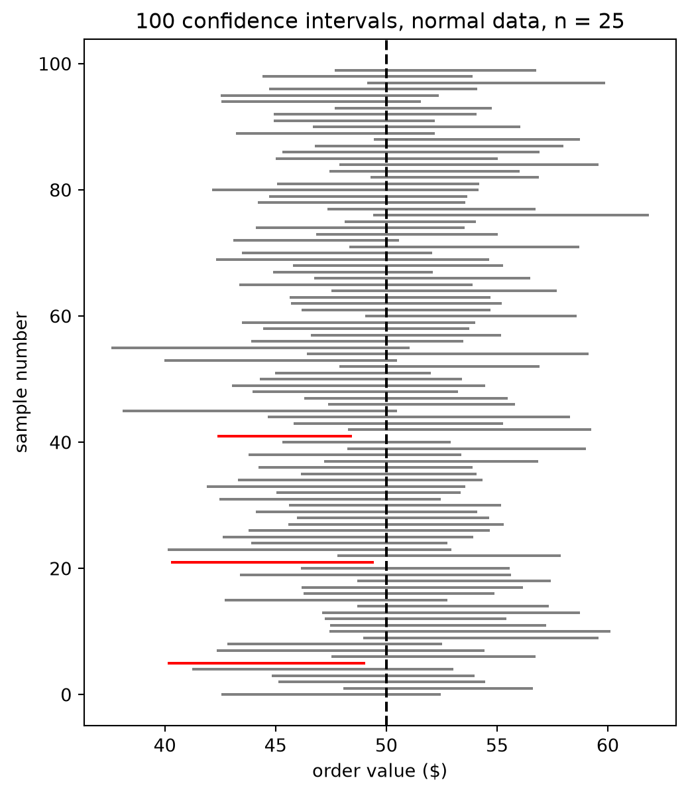
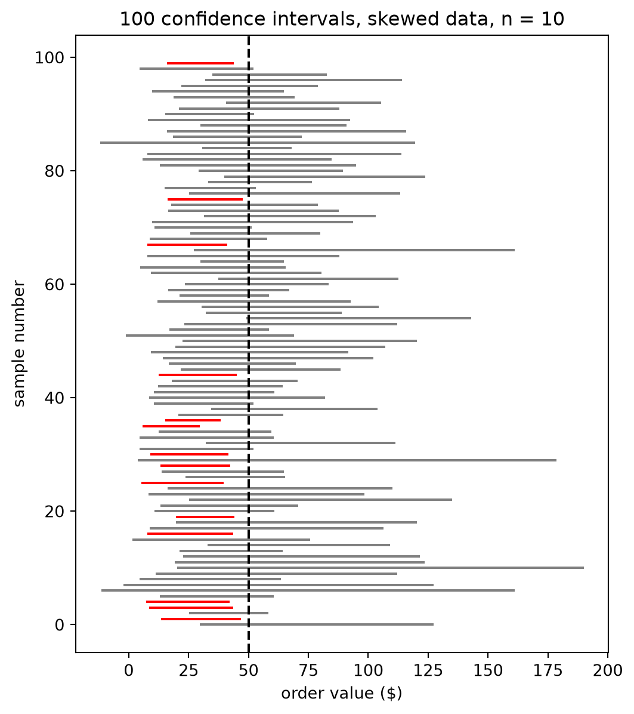
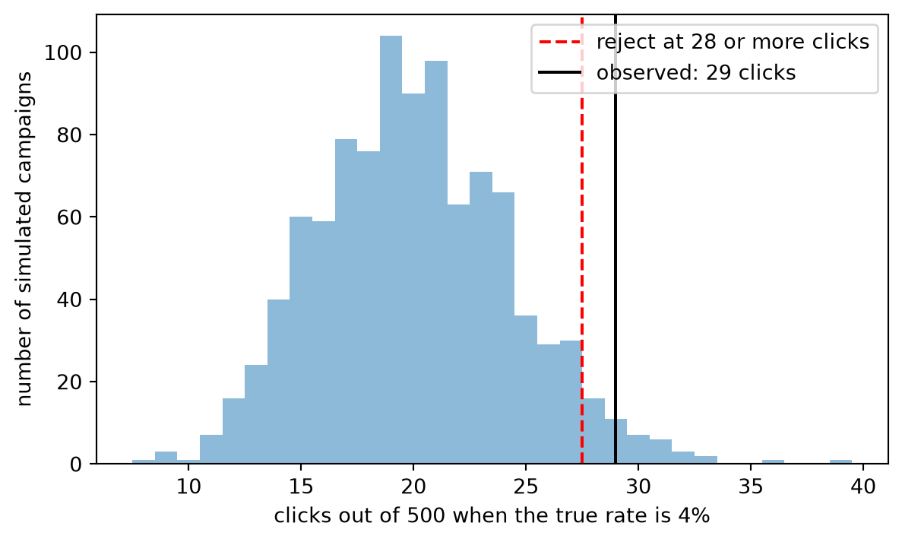
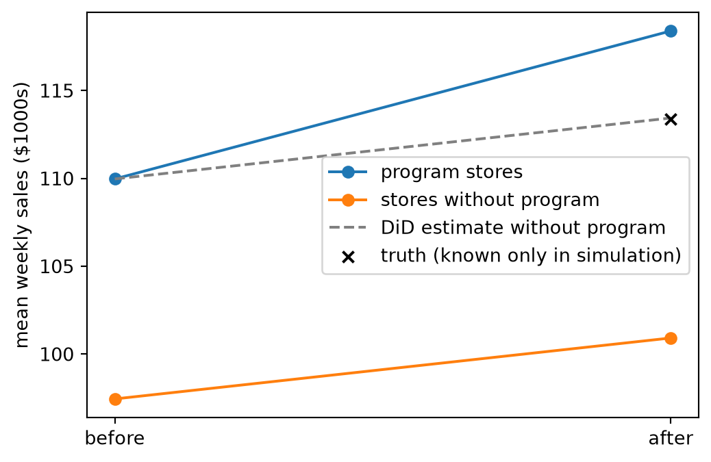
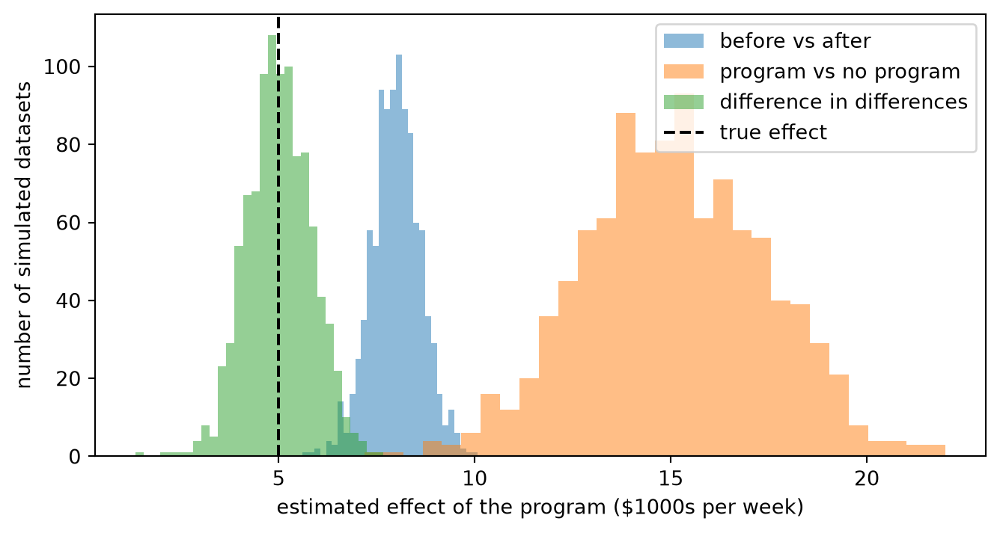
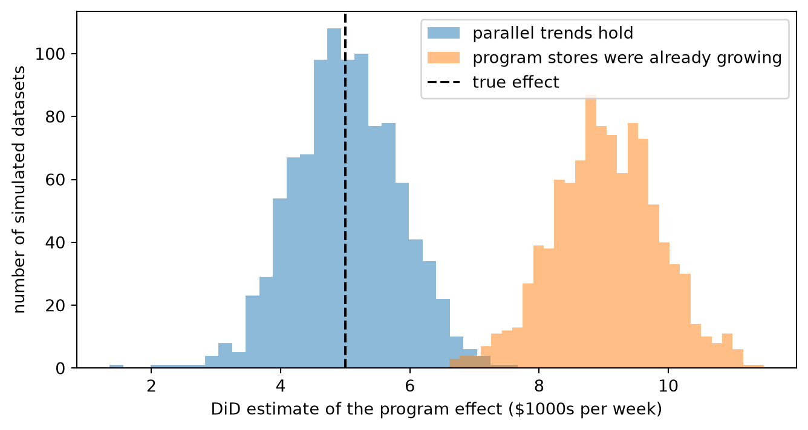

Applications
Goals
- Run a one-sample t-test and a binomial test in Python with
scipy.stats. - Use simulation to examine what “95% confidence” and a significance level of 0.05 mean.
Packages
Overview
In analyzing data, we often have just one sample and can derive a single realization of statistics that inform our understanding of that sample.
In a simulation we choose the truth. We can then generate as many samples as we want, apply a method to each one, and validate theoretical predictions about how estimates should behave. The first two examples follow the same structure:
- Run a test on a single dataset, as you would in practice.
- Apply the same method to many simulated datasets for which we know the truth.
- Compare what we observe against a method’s guarantees.
The one-sample t-test and confidence intervals
Example: Palmer penguins
Suppose a reference book claims that Gentoo penguins have a mean body mass of 5000 g. Do the Palmer penguins data agree?
count 123.000000
mean 5076.016260
std 504.116237
min 3950.000000
25% 4700.000000
50% 5000.000000
75% 5500.000000
max 6300.000000
Name: body_mass_g, dtype: float64The test statistic compares the sample mean \(\bar{X}\) with the hypothesized mean \(\mu_{0}\), in units of the standard error:
\[ T = \frac{\bar{X} - \mu_{0}}{s / \sqrt{n}}, \]
where \(s\) is the (corrected) sample standard deviation and \(n\) is the sample size. The one-sample \(t\)-test is implemented in many programming languages. The stats submodule from scipy implements this in the ttest_1samp() function:
TtestResult(statistic=np.float64(1.6723546021936868), pvalue=np.float64(0.09701712995095353), df=np.int64(122))The result object also provides a confidence interval for the mean,
\[ \bar{X} \pm t^{*} \, \frac{s}{\sqrt{n}}, \]
where \(t^{*}\) is a quantile of the \(t\) distribution with \(n - 1\) degrees of freedom.
ConfidenceInterval(low=np.float64(4986.034279556633), high=np.float64(5165.99824076857))The p-value is above 0.05 and the interval contains 5000, so the test statistic suggests the data are consistent with the reference book’s claim.
Alternatively, you can manually construct the test statistic as follows:
np.float64(1.6723546021936868)The corresponding confidence interval is
(4986.034279556633, 5165.99824076857)A pandas Series computes .std() with \(n - 1\) in the denominator (the sample standard deviation). A NumPy array computes .std() with \(n\) in the denominator. To get the sample standard deviation from a NumPy array, write x.std(ddof=1).
Assumptions
- The observations are independent of one another.
- The data come from a normal distribution, or the sample is large enough for the central limit theorem to apply to \(\bar{X}\).
Guarantees
If the assumptions hold, then the interval contains the true mean \(\mu\) for 95% of samples:
\[ P\left( \bar{X} - t^{*}\frac{s}{\sqrt{n}} \;\le\; \mu \;\le\; \bar{X} + t^{*}\frac{s}{\sqrt{n}} \right) = 0.95. \]
The probability refers to the sample, which is random. The true mean \(\mu\) is a fixed number. For the penguins we computed one interval, and we cannot tell whether it is one of the 95% that contain \(\mu\) or one of the 5% that do not.
Simulation: Assumptions hold
Suppose order values are normally distributed with mean \(\mu = 50\) dollars and standard deviation \(\sigma = 12\) dollars, and that we sample \(n = 25\) orders. We conduct a one-sample \(t\)-test to check if samples of size \(n=25\), generated under these assumptions, have a population mean equal to \(\mu = 50\).
- \(H_{0}\): The population mean \(\mu = 50\).
- \(H_{A}\): The population mean \(\mu \neq 50\).
We conduct this test at the \(\alpha = 0.05\) significance level.
(np.float64(46.83323981238469), np.float64(56.081241796358626))Repeat this 100 times and store the intervals in a table:
| low | high | covers | |
|---|---|---|---|
| 0 | 42.558074 | 52.473724 | True |
| 1 | 48.067491 | 56.623633 | True |
| 2 | 45.119797 | 54.465590 | True |
| 3 | 44.829572 | 53.977724 | True |
| 4 | 41.229439 | 53.034340 | True |
The column covers records whether an interval contains the true mean of 50.
def plot_intervals(intervals, mu, title):
# Draw each interval as a horizontal line; highlight those that miss mu
colors = intervals["covers"].map({True: "gray", False: "red"})
fig, ax = plt.subplots(figsize=(6, 7))
ax.hlines(y=intervals.index, xmin=intervals["low"], xmax=intervals["high"], colors=colors)
ax.axvline(mu, color="black", linestyle="--")
ax.set_xlabel("order value ($)")
ax.set_ylabel("sample number")
ax.set_title(title)
plt.show()
plot_intervals(intervals, mu=50, title="100 confidence intervals, normal data, n = 25")
- Each horizontal line is the interval from one sample. The dashed line marks the true mean.
- The intervals differ from sample to sample, in both location and width.
- The red intervals miss the true mean. We expect about 5 out of 100.
“95% confidence” is a property of the procedure: it produces an interval that covers the truth for 95% of samples. The proportion of intervals that cover the truth is called the coverage.
- When the null hypothesis \(H_{0}\) is true, a valid test should reject with probability at most \(\alpha\).
- A confidence interval obtained by inverting a test should contain the population value with probability at least \(1-\alpha\).
- There are several reasons why achieving the nominal coverage may not happen; for example, if the test relies on asymptotics rather than being an exact test or if model assumptions do not hold.
The takeaway message here is that simulation offers a means by which we can examine the validity of inference and explore how it might break down.
Simulation: An assumption fails
Now break the normality assumption, and change nothing else about the method. Order values follow a strongly skewed (exponential) distribution with the same mean of 50, and we sample only \(n = 10\) orders.
intervals_skewed = pd.DataFrame(
[simulate_interval_skewed(rng, n=10) for _ in range(100)],
columns=["low", "high"],
)
intervals_skewed["covers"] = (intervals_skewed["low"] <= 50) & (50 <= intervals_skewed["high"])
plot_intervals(intervals_skewed, mu=50, title="100 confidence intervals, skewed data, n = 10")
With 100 intervals the count is noisy, so we repeat with 1000 for a more accurate estimate of the coverage:
np.float64(0.913)- The coverage is approximately 91%, not 95%. The label “95% confidence interval” is no longer accurate.
- Almost all of the red intervals lie below the true mean. A small sample from a skewed distribution often contains no large orders, which makes both the sample mean and the sample standard deviation too small.
- Nothing in the output of
ttest_1samp()warns about this. The function computes the same formula regardless of where the data came from.
The second assumption has an “or”: a larger sample repairs the problem, because of the central limit theorem.
The binomial test and p-values
Example: E-mail marketing
A company’s marketing emails have historically had a click rate of 4%. A redesigned email is sent to 500 customers, and 29 of them click. Is the new design better, or could this be chance?
If each of \(n\) customers clicks independently with probability \(p\), the number of clicks \(X\) has a binomial distribution:
\[ P(X = k) = \binom{n}{k} \, p^{k} (1 - p)^{n - k}. \]
The null hypothesis is that nothing changed, \(H_{0}: p = 0.04\). Under \(H_{0}\) we expect \(500 \times 0.04 = 20\) clicks. The p-value is the probability, computed under \(H_{0}\), of a result at least as extreme as the one observed:
\[ \text{p-value} = P(X \ge 29 \mid p = 0.04). \]
np.float64(0.0314301090240822)By hand, using a distribution object from Simulating Random Variables:
np.float64(0.0314301090240822)The p-value is below 0.05, so we would reject \(H_{0}\) at the 5% significance level and conclude that the redesign appears to have raised the click rate.
Assumptions
- The number of trials \(n\) is fixed in advance.
- The trials are independent.
- Every trial has the same probability \(p\).
Guarantees
Suppose we use the rule “reject \(H_{0}\) when the p-value is below \(\alpha = 0.05\)”. If \(H_{0}\) is true and the assumptions hold, then
\[ P(\text{reject } H_{0} \mid H_{0} \text{ is true}) \le \alpha. \]
Rejecting a true null hypothesis is called a false positive (or Type I error). The promise is about how often the rule raises a false alarm.
Simulation: Under null hypothesis
Suppose the click rate is 4%, so the redesign does nothing. Simulate 1000 campaigns of 500 emails each, and test every one of them.
array([17, 17, 13, 30, 22, 15, 15, 24, 24, 26])np.float64(0.047)A few percent of the campaigns produce a “significant” result, even though the click rate never changed. The proportion is at most \(\alpha = 0.05\), as promised. It is not exactly 0.05 because click counts are whole numbers: no cutoff gives a false positive rate of exactly 5%, so the test uses the largest rate that does not exceed it.
# Smallest number of clicks that leads to rejection
cutoff = min(k for k in range(501) if click_pvalue(k) < 0.05)
fig, ax = plt.subplots(figsize=(7, 4))
bins = np.arange(clicks.min(), clicks.max() + 2) - 0.5
ax.hist(clicks, bins=bins, alpha=0.5)
ax.axvline(cutoff - 0.5, color="red", linestyle="--", label=f"reject at {cutoff} or more clicks")
ax.axvline(29, color="black", label="observed: 29 clicks")
ax.set_xlabel("clicks out of 500 when the true rate is 4%")
ax.set_ylabel("number of simulated campaigns")
ax.legend()
plt.show()
- The histogram shows the click counts that chance alone produces when the rate is 4%.
- Campaigns to the right of the dashed line are the false positives.
- The p-value of the observed campaign is the share of the histogram at or beyond the solid line.
A p-value of about 0.03 does not mean “there is a 3% chance the redesign did nothing”. It means that if the redesign did nothing, a result this large would occur in about 3% of campaigns.
A test can also fail in the opposite direction: the redesign really works, and the test does not detect it. The probability that a test rejects \(H_{0}\) when \(H_{0}\) is false is called the power of the test. Power depends on how large the true effect is and on the sample size.
Difference in differences
The question
A retailer has 50 stores and starts a loyalty program in 20 of them. A few months later, management asks: did the program raise weekly sales, and by how much?
This is a question about cause and effect. We want to compare the sales of the program stores with what their sales would have been without the program. That second quantity is never observed. Every method for answering the question is a way of estimating it, and each relies on an assumption.
In a simulation we can choose the true effect of the program, and also record sales without the program, so we can check each method against the truth.
A simulated retailer
Let \(Y_{it}\) be the weekly sales (in thousands of dollars) of store \(i\) in period \(t\), where \(t = 0\) is before the program and \(t = 1\) is after. We generate sales from
\[ Y_{it} = \alpha_{i} + \lambda_{t} + \tau \, D_{it} + \varepsilon_{it}. \]
| Symbol | Meaning | In the simulation |
|---|---|---|
| \(\alpha_{i}\) | baseline sales of store \(i\) | about 100; program stores are larger by 10 on average |
| \(\lambda_{t}\) | change over time shared by all stores | \(\lambda_{0} = 0\), \(\lambda_{1} = 3\) |
| \(D_{it}\) | 1 if store \(i\) has the program in period \(t\), else 0 | 1 only for program stores after the start |
| \(\tau\) | effect of the program | 5 |
| \(\varepsilon_{it}\) | week-to-week noise | standard deviation 2 |
Two features of this model make the problem interesting.
- Sales change over time for every store (\(\lambda_{1} - \lambda_{0} = 3\)), for reasons unrelated to the program, such as the season.
- The program stores were not chosen at random. Management picked larger stores.
def simulate_stores(rng, effect=5.0, extra_trend=0.0, n_stores=50, n_treated=20):
# The first n_treated stores receive the program.
# extra_trend is additional growth in program stores, unrelated to the program.
store = np.arange(n_stores)
treated = (store < n_treated).astype(int)
# Baseline: program stores are larger by 10 on average
baseline = rng.normal(loc=100 + 10 * treated, scale=8)
# Sales before, after without the program, and after with the program
before = baseline + rng.normal(scale=2, size=n_stores)
after_without = baseline + 3 + extra_trend * treated + rng.normal(scale=2, size=n_stores)
after = after_without + effect * treated
pre = pd.DataFrame({
"store": store, "treated": treated, "post": 0,
"sales": before, "sales_without_program": before,
})
post = pd.DataFrame({
"store": store, "treated": treated, "post": 1,
"sales": after, "sales_without_program": after_without,
})
return pd.concat([pre, post], ignore_index=True)| store | treated | post | sales | sales_without_program | |
|---|---|---|---|---|---|
| 80 | 30 | 0 | 1 | 94.724335 | 94.724335 |
| 84 | 34 | 0 | 1 | 107.351401 | 107.351401 |
| 33 | 33 | 0 | 0 | 89.710914 | 89.710914 |
| 81 | 31 | 0 | 1 | 114.462478 | 114.462478 |
| 93 | 43 | 0 | 1 | 115.490663 | 115.490663 |
| 17 | 17 | 1 | 0 | 114.304393 | 114.304393 |
- There is one row for each store and period, so each store appears twice. Data with this shape are called panel data.
treatedis 1 for the 20 program stores, in both periods.postis 1 for the period after the program started.sales_without_programis the column that real data never contain. It equalssalesexcept for program stores in the after period.
For now, ignore the argument extra_trend; it is zero.
A table of means
All the estimates below are built from four numbers: the mean sales of each group in each period.
| before | after | |
|---|---|---|
| no program | 97.446078 | 100.914906 |
| program | 109.969591 | 118.393560 |
Why not compare before and after?
The most natural estimate uses the program stores only:
np.float64(8.423969081514997)The true effect is 5, and this is too large. Averaging \(Y_{it}\) over the program stores (the noise averages out to approximately zero) explains why:
\[ \bar{Y}_{\text{program, after}} - \bar{Y}_{\text{program, before}} \approx (\bar{\alpha}_{P} + \lambda_{1} + \tau) - (\bar{\alpha}_{P} + \lambda_{0}) = \tau + (\lambda_{1} - \lambda_{0}). \]
The comparison mixes the effect of the program with everything else that changed between the two periods. In this simulation it estimates \(5 + 3 = 8\) on average.
Why not compare program stores with the others?
A second natural estimate uses the after period only:
np.float64(17.47865438216067)This is even further from 5:
\[ \bar{Y}_{\text{program, after}} - \bar{Y}_{\text{no program, after}} \approx (\bar{\alpha}_{P} + \lambda_{1} + \tau) - (\bar{\alpha}_{N} + \lambda_{1}) = \tau + (\bar{\alpha}_{P} - \bar{\alpha}_{N}). \]
The comparison mixes the effect of the program with the differences that existed between the two groups of stores before the program began. In this simulation it estimates \(5 + 10 = 15\) on average.
Difference in differences
Each comparison removes one nuisance and keeps the other.
- The before/after difference for program stores removes their baseline \(\bar{\alpha}_{P}\), and keeps the time change \(\lambda_{1} - \lambda_{0}\).
- The stores without the program experience the same time change and no program effect. Their before/after difference estimates \(\lambda_{1} - \lambda_{0}\) alone.
Subtracting one difference from the other leaves only \(\tau\):
\[ \hat{\tau}_{\text{DiD}} = \underbrace{\left( \bar{Y}_{\text{program, after}} - \bar{Y}_{\text{program, before}} \right)}_{\approx\ \tau + (\lambda_{1} - \lambda_{0})} - \underbrace{\left( \bar{Y}_{\text{no program, after}} - \bar{Y}_{\text{no program, before}} \right)}_{\approx\ \lambda_{1} - \lambda_{0}}. \]
np.float64(4.955141234789906)The DiD estimate is close to the true effect of 5: the program raised weekly sales by approximately $5.0 thousand per store.
DiD uses the stores without the program to estimate where the program stores would have been. Since this is a simulation, we can draw that estimate next to the truth.
truth = cell_means(stores, column="sales_without_program")
# DiD's estimate: program stores change by as much as the other stores did
guess = means.loc["program", "before"] + change_no_program
fig, ax = plt.subplots(figsize=(6, 4))
periods = [0, 1]
ax.plot(periods, means.loc["program"], marker="o", label="program stores")
ax.plot(periods, means.loc["no program"], marker="o", label="stores without program")
ax.plot(periods, [means.loc["program", "before"], guess],
linestyle="--", color="gray", label="DiD estimate without program")
ax.scatter([1], [truth.loc["program", "after"]],
marker="x", color="black", zorder=3, label="truth (known only in simulation)")
ax.set_xticks(periods, ["before", "after"])
ax.set_ylabel("mean weekly sales ($1000s)")
ax.legend()
plt.show()
- The dashed line is parallel to the line for the stores without the program.
- The DiD estimate is the vertical gap between the program stores and the dashed line in the after period.
- The cross marks the true mean of
sales_without_programfor the program stores. The dashed line ends close to it.
Repeating the simulation
One dataset shows that DiD came closer on this occasion. To learn how each method behaves in general, we repeat the simulation.
def three_estimates(df):
# Return the three estimates of the program effect from one dataset
m = cell_means(df)
change_program = m.loc["program", "after"] - m.loc["program", "before"]
change_no_program = m.loc["no program", "after"] - m.loc["no program", "before"]
return {
"before vs after": change_program,
"program vs no program": m.loc["program", "after"] - m.loc["no program", "after"],
"difference in differences": change_program - change_no_program,
}
results = pd.DataFrame([three_estimates(simulate_stores(rng)) for _ in range(n_reps)])
results.head()| before vs after | program vs no program | difference in differences | |
|---|---|---|---|
| 0 | 8.823839 | 19.527082 | 6.370445 |
| 1 | 8.311692 | 15.102657 | 5.405786 |
| 2 | 7.995634 | 12.484574 | 4.693278 |
| 3 | 7.342012 | 15.081507 | 3.682617 |
| 4 | 8.870245 | 15.798463 | 6.791271 |
Each row holds the three estimates from one simulated dataset.
| before vs after | program vs no program | difference in differences | |
|---|---|---|---|
| mean | 7.996201 | 15.068867 | 5.014995 |
| std | 0.628263 | 2.328958 | 0.819004 |
fig, ax = plt.subplots(figsize=(8, 4))
for name in results.columns:
ax.hist(results[name], bins=30, alpha=0.5, label=name)
ax.axvline(5, color="black", linestyle="--", label="true effect")
ax.set_xlabel("estimated effect of the program ($1000s per week)")
ax.set_ylabel("number of simulated datasets")
ax.legend()
plt.show()
Two different things can be wrong with an estimate.
- Bias: the estimates are centered at the wrong value. The before/after comparison is centered at 8 and the program/no-program comparison at 15. Collecting more stores would make these histograms narrower, and leave them centered at the wrong place.
- Noise: the estimates vary from one dataset to the next. This is the spread of each histogram, and it is what standard errors and confidence intervals describe.
The DiD estimate is centered at the true effect. It is also less noisy than the program/no-program comparison: by working with each store’s change, DiD removes the large store-to-store differences in baseline sales.
The connection to the linear model
The DiD estimate can be obtained from a linear model with the two indicator columns, treated and post, and their product:
\[ Y = \beta_{0} + \beta_{1} \, \text{treated} + \beta_{2} \, \text{post} + \beta_{3} \, (\text{treated} \times \text{post}) + \varepsilon. \]
Both predictors only take the values 0 and 1, so the model describes four group means:
before (post = 0) |
after (post = 1) |
after \(-\) before | |
|---|---|---|---|
no program (treated = 0) |
\(\beta_{0}\) | \(\beta_{0} + \beta_{2}\) | \(\beta_{2}\) |
program (treated = 1) |
\(\beta_{0} + \beta_{1}\) | \(\beta_{0} + \beta_{1} + \beta_{2} + \beta_{3}\) | \(\beta_{2} + \beta_{3}\) |
The difference between the two entries in the last column is \(\beta_{3}\). The coefficient of the product term is the difference in differences. The other coefficients have familiar meanings:
- \(\beta_{0}\): mean of the stores without the program, before.
- \(\beta_{1}\): how much larger the program stores were at baseline.
- \(\beta_{2}\): the change over time shared by both groups.
In a model formula, treated * post means “include treated, post, and their product”. The product term is called an interaction, and statsmodels labels it treated:post.
Intercept 97.446078
treated 12.523513
post 3.468828
treated:post 4.955141
dtype: float64The interaction coefficient equals the DiD estimate computed from the table of means.
The regression output also reports standard errors and confidence intervals. These assume that all 100 rows are independent observations. They are not: each store contributes two rows, and a store with high sales before tends to have high sales after. The estimate of \(\beta_{3}\) is correct, but its standard error from this model should not be trusted. Reducing the data to one row per store, containing that store’s change in sales, and fitting change ~ treated gives an appropriate standard error with two periods.
The assumption: parallel trends
DiD uses the stores without the program to estimate how the program stores would have changed. This is valid if, in the absence of the program, the two groups would have changed by the same amount on average.
Write \(Y(0)\) for sales without the program. The assumption is
\[ E\big[\, Y_{\text{after}}(0) - Y_{\text{before}}(0) \mid \text{program} \,\big] = E\big[\, Y_{\text{after}}(0) - Y_{\text{before}}(0) \mid \text{no program} \,\big]. \]
- The assumption allows the two groups to have different levels of sales. What must be equal is the change.
- The left-hand side involves the sales of program stores after the start date had there been no program. This is not observed, so the assumption cannot be verified from data.
- In the simulation the assumption held, because \(\lambda_{t}\) was the same for all stores.
Suppose management chose stores in neighborhoods that were already growing. Then the program stores would have gained an extra amount \(\delta\) even without the program, and
\[ \hat{\tau}_{\text{DiD}} \approx \tau + \delta. \]
DiD attributes the extra growth to the program. In simulate_stores(), the argument extra_trend plays the role of \(\delta\). We repeat the simulation with extra_trend=4 and change nothing else.
name = "difference in differences"
fig, ax = plt.subplots(figsize=(8, 4))
ax.hist(results[name], bins=30, alpha=0.5, label="parallel trends hold")
ax.hist(results_trend[name], bins=30, alpha=0.5, label="program stores were already growing")
ax.axvline(5, color="black", linestyle="--", label="true effect")
ax.set_xlabel("DiD estimate of the program effect ($1000s per week)")
ax.set_ylabel("number of simulated datasets")
ax.legend()
plt.show()
- The true effect is still 5, but the estimates are now centered at approximately \(5 + 4 = 9\).
- The histogram is as narrow as before. Each individual analysis would report a tight confidence interval and a small p-value, around the wrong number.
- This is bias, not noise, so a larger sample does not help.
Compare this with the t-test. There, a skewed population damaged the confidence interval when \(n = 10\), and a larger sample repairs it. Here, the problem is with which stores are compared, and no amount of data from those stores can repair it.
The assumption cannot be proven, but it can be made more or less believable. Ask how the groups were chosen: if the reason is related to expected growth, be skeptical.
This example uses one period before and one after the program. In practice, DiD is applied to data with many periods, and the idea needs to be generalized. Data from several periods before the program are also useful: if the two groups moved together before the start date, parallel trends is more plausible.
A real example: minimum wage and employment
A classic use of DiD is a study by David Card and Alan Krueger (1994). On April 1, 1992, New Jersey raised its minimum wage from $4.25 to $5.05 per hour. Neighboring Pennsylvania did not. The authors surveyed fast-food restaurants (Burger King, KFC, Roy Rogers, and Wendy’s) in New Jersey and eastern Pennsylvania in early 1992, before the increase, and again later that year.
Reading the data
The file public.dat has one row per restaurant and no row of column names. Values are separated by spaces, and a period (.) marks a missing value. The accompanying codebook lists the columns in order.
columns = [
"sheet", "chain", "co_owned", "state",
"southj", "centralj", "northj", "pa1", "pa2", "shore",
# First interview
"ncalls", "empft", "emppt", "nmgrs", "wage_st", "inctime", "firstinc",
"bonus", "pctaff", "meals", "open", "hrsopen", "psoda", "pfry", "pentree",
"nregs", "nregs11",
# Second interview
"type2", "status2", "date2", "ncalls2", "empft2", "emppt2", "nmgrs2",
"wage_st2", "inctime2", "firstin2", "special2", "meals2", "open2r",
"hrsopen2", "psoda2", "pfry2", "pentree2", "nregs2", "nregs112",
]
ck = pd.read_csv(
os.path.join("assets", "public.dat"),
sep=r"\s+", # one or more spaces between values
header=None, # no row of column names
names=columns,
na_values=".",
)
ck.shape(410, 46)The column state is 1 for New Jersey and 0 for Pennsylvania.
Employment
Card and Krueger measure employment in full-time equivalents (FTE), counting each part-time worker as half of a full-time worker:
\[ \text{FTE} = \text{full-time} + \text{managers} + \tfrac{1}{2} \, \text{part-time}. \]
As in the simulation, we arrange the data with one row per restaurant and period. New Jersey restaurants play the role of the treated group.
| treated | post | fte | |
|---|---|---|---|
| 0 | 0 | 0 | 40.50 |
| 1 | 0 | 0 | 13.75 |
| 2 | 0 | 0 | 8.50 |
| 3 | 0 | 0 | 34.00 |
| 4 | 0 | 0 | 24.00 |
The 2×2 table
| before | after | |
|---|---|---|
| Pennsylvania | 23.331169 | 21.165584 |
| New Jersey | 20.439408 | 21.027429 |
.mean() skips missing values, so each cell uses the restaurants that reported employment in that survey. Restaurants that closed permanently are recorded with zero employment in the second survey. These are the means reported by Card and Krueger.
Pennsylvania -2.165584
New Jersey 0.588021
dtype: float64- A before/after comparison in New Jersey alone shows a small increase of about 0.6 FTE per restaurant.
- A comparison of the two states after the increase shows New Jersey slightly lower.
- Relative to the change in Pennsylvania, employment in New Jersey restaurants rose by approximately 2.75 FTE per restaurant.
The linear model gives the same estimate:
np.float64(2.75360578298056)Many economists expected employment to fall after a minimum wage increase, and the study remains widely discussed. Much of that discussion is about parallel trends: would employment in New Jersey restaurants have followed the same path as in eastern Pennsylvania if the minimum wage had stayed the same? The answer cannot be computed. It has to be argued, which is why understanding the assumption matters as much as computing the estimate.
Exercises
Hypothesis tests
- A larger sample. Repeat the skewed-data simulation with \(n = 200\) in place of \(n = 10\), using 1000 repetitions.
- What is the coverage now?
- Explain the change using the central limit theorem.
- Power. Suppose the redesign truly raises the click rate to 5%.
- Simulate 1000 campaigns of 500 emails with
p=0.05, and test each one against \(H_{0}: p = 0.04\). - In what fraction of campaigns is \(H_{0}\) rejected? This is the power of the test.
- Based on your answer, how reliable is a campaign of 500 emails for detecting an improvement of one percentage point?
- Simulate 1000 campaigns of 500 emails with
- Interpreting a p-value. A colleague reports the email result as “there is a 3% chance that the redesign had no effect.” Explain what is wrong with this statement, and write a correct one.